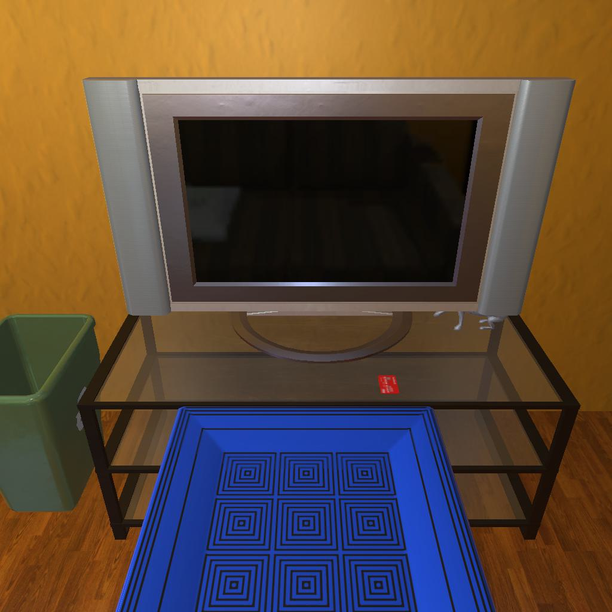

---------------------------------------------------------task: 3---------------------------------------------------------
--------------------------------------------------------------------------------------------------------------------------------------------------------------------
--------------------------------------------------------------------------------------------------------------------------------------------------------------------
Step:--------------------------------------------------------------------------4-------------------------------------------------------------------------------
----------------------------------------
VLM Prompt:
Image1:
**Instruction**
1. Analyze the provided image to identify all visible household objects, focusing on those relevant to the task description "look at plate under the floorlamp."
2. Use the analysis of the image and the task hint "The agent must find an object of the desired type, locate and turn on a light source with the desired object in-hand." to answer the question: what is the most reasonable action in the choices for the task description "look at plate under the floorlamp"?
4. Decide and write the answer using the template: The answer is: (i): , where i is the real number. If there is no desired object in the image, search every place based on **Initial Observation** to find the object. And if no one is exactly correct, choose a similar answer.
**Initial Observation**
You are in the middle of a room. Looking quickly around you, you can see armchair (1), garbagecan (1), tvstand (1), shelf (1-5), sofa (1), coffeetable (1), sidetable (1-2), drawer (1)
**Answer Choices**
(1): go to armchair 1
(2): go to garbagecan 1
(3): go to tvstand 1
(4): go to sofa 1
(5): go to coffeetable 1
(6): go to sidetable 1
(7): go to sidetable 2
(8): go to drawer 1
(9): go to shelf 3
(10): go to shelf 4
(11): go to shelf 5
(12): put plate 1 in/on shelf 2
(13): examine plate 1
(14): examine shelf 2
**Answer**
Let's think step by step by following the instructions.
----------------------------------------
----------------------------------------
Original Response:
Firstly, we analyze the image provided. There is no plate visible under the floorlamp or anywhere else in the image. Therefore, we must search for the plate based on the **Initial Observation**.
The task description "look at plate under the floorlamp" implies that we need to find a plate. The hint indicates that once we have the plate, we should locate and turn on a light source. Since the image does not show a floorlamp, we assume it is somewhere else in the room, not visible in the current view.
Based on the **Initial Observation**, we have several places to search for the plate: armchair, garbagecan, tvstand, shelf, sofa, coffeetable, sidetable, and drawer. Among these options, the most likely places to find a plate would be on a shelf, coffeetable, or sidetable, as these are common places where one might place a plate.
Considering the above analysis and the task to "look at plate under the floorlamp," the most reasonable action from the choices listed would be to search the places where a plate is likely to be found. Since there is no specific action to "search," we will choose the action to "go to" one of the likely places.
The answer is: (9): go to shelf 3.
----------------------------------------
----------------------------------------
>>> Refine Original VLM Response and Get Pure Action: go to shelf 3
----------------------------------------
-----------------------------------------------------------------
Running time: 20.082942247390747 seconds
Total Money: 0.6898799999999999
-----------------------------------------------------------------
-----------------------------------------------------------------
Text Observation:You arrive at loc 10. On the shelf 3, you see a statue 2.
-----------------------------------------------------------------
UNSUCCEED